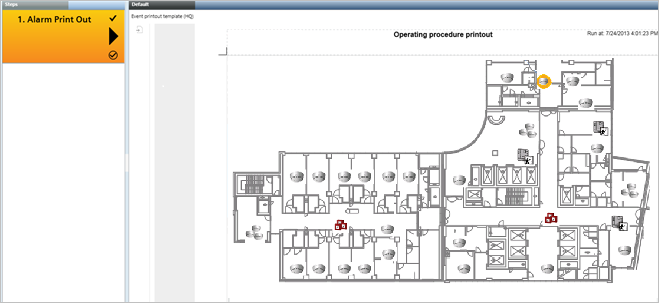

Executing an Alarm Printout Step in Assisted Treatment
- You are in the Assisted Treatment window, and the operating procedure includes an alarm printout step that you must manually execute.

- From the Steps checklist, select the [alarm printout] step.
- The preconfigured alarm report displays in the Default tab. When you select this step for the first time, a new report is generated. On subsequent selection, the same report is reloaded.
- If the report contains form controls (for example, editable fields or drop-down lists), specify the necessary information and click Save User Input
 .
. - Click Send to Output .
- The report is routed to a file, email, or printer, depending on its configured output destination.
- When you generate an alarm printout, a report, or an alarm-handling form using a virtual printer (for example, a PDF printer), the output files are saved in the following location: C:\GMSProjects\[Customer project]\data\Reporting\Reports.
- When you complete an assisted procedure of an event, any attachment (such as, alarm printout, report or alarm-handling form) is saved in the following location: C:\GMSProjects\[Customer project]\shared\attachments. The Activity Log report includes a link to these attachments.